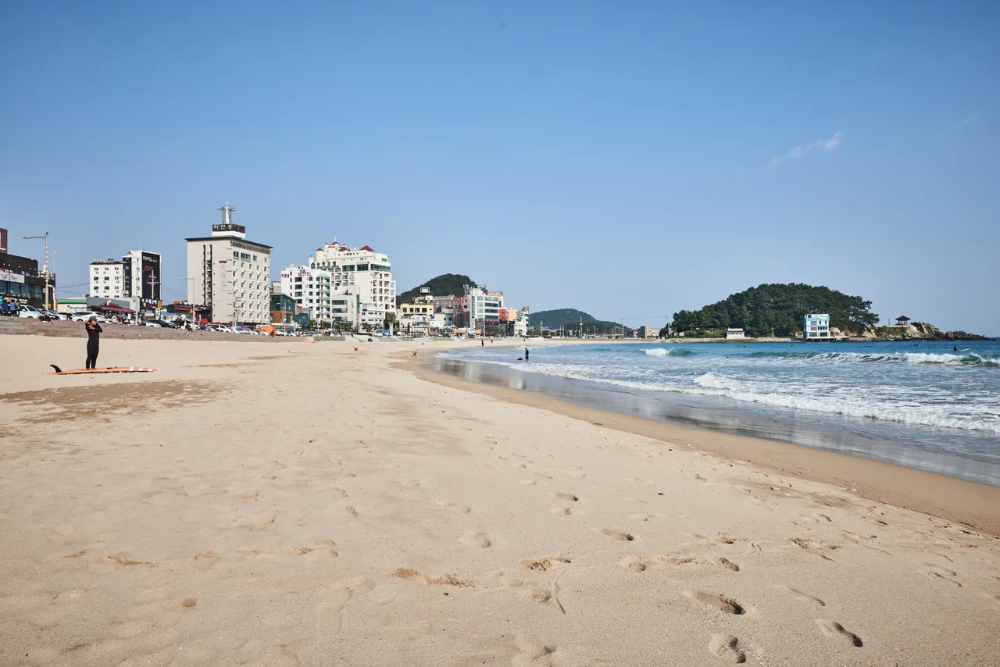

▲ 연휴가 사흘이면 갈 수 있는 곳이 정해집니다 ⓒ 한국관광공사 (공공누리 제1유형)
여행 계획은 보통 목적지에서 시작합니다. 어디에 갈지 정하고 일정을 맞춥니다.
연휴에는 순서를 뒤집는 편이 낫습니다. 쓸 수 있는 시간이 먼저고, 갈 수 있는 곳은 그다음에 정해집니다.
1. 사흘이라는 조건
올해 추석은 9월 25일 금요일입니다. 법정 연휴는 24일 목요일부터 26일 토요일까지 사흘입니다.
| 항목 | 내용 |
|---|---|
| 추석 당일 | 9월 25일(금) |
| 법정 연휴 | 9월 24일(목) ~ 26일(토) — 사흘 |
| 대체공휴일 | 지정 없음 — 연휴 안에 일요일이 없음 |
| 실질 휴식 | 27일(일)까지 나흘 — 연차 없이 |
📍 사흘과 나흘은 완전히 다릅니다
사흘이면 가는 날·있는 날·오는 날로 끝납니다. 중간에 여유가 없습니다.
27일 일요일까지 쓰면 온전한 하루가 더 생깁니다. 다만 그날은 귀경 정체의 정점이기도 합니다. 하루를 벌고 이동에 그 하루를 돌려주는 셈이 되지 않도록 계산해야 합니다.
2. 거리가 아니라 시간으로 재야 합니다
평소 3시간이면 가는 길이 연휴에는 6~7시간이 됩니다. 거리는 그대로인데 시간이 두 배가 됩니다. 실제로 2025년 추석에 서울~부산 귀성은 7시간 30분이 걸렸습니다.
그래서 "몇 km"로 계획하면 반드시 어긋납니다. 지도 앱이 알려주는 평시 소요 시간에 배수를 곱해서 봐야 합니다.
| 평시 소요 | 연휴 예상 | 성격 |
|---|---|---|
| 1~2시간 | 2~3시간 | 당일치기 여유 |
| 2~3시간 | 4~5시간 | 1박 2일에 적합 |
| 3~4시간 | 6~7시간 | 1박은 빠듯 — 2박 권장 |
| 4시간 이상 | 8시간 이상 | 이동에 하루를 쓴다 |
✅ 이 표를 쓰는 법
· 지도 앱의 평시 소요 시간을 먼저 확인한다
· 연휴 첫날 오전과 마지막 날 오후는 2배로 잡는다
· 왕복이므로 두 번 겪는다는 것을 잊지 않는다
· 휴게소 정차와 식사 시간을 별도로 더한다

▲ 연휴에는 같은 거리를 두 배의 시간으로 갑니다 ⓒ Wikimedia Commons
3. 시간대별로 갈 수 있는 곳
수도권 출발을 기준으로 정리하면 이렇게 나뉩니다. 아래 시간은 평시 기준이므로, 연휴에는 위 표의 배수를 적용해야 합니다.
| 평시 소요 | 지역 예시 | 적합한 일정 |
|---|---|---|
| 1~2시간 | 강화 · 양평 · 안성 · 아산 | 당일치기 |
| 2~3시간 | 강릉 · 속초 · 대전 · 전주 | 1박 2일 |
| 3~4시간 | 경주 · 안동 · 여수 방면 | 2박 3일 |
| 4시간 이상 | 부산 · 남해 · 해남 | 연휴 사흘로는 빠듯 |
📍 연휴에는 한 칸씩 내려 잡는 것이 안전합니다
평시 3시간짜리 목적지를 1박 2일로 잡으면, 연휴에는 이동에만 10시간을 쓰게 됩니다.
평소 2시간대 목적지를 고르면 같은 일정이 여유로워집니다. 목적지의 급을 낮추는 것이 아니라, 시간을 정직하게 계산하는 것입니다.

▲ 부산·남해 방면은 연휴 사흘로는 이동 비중이 너무 커집니다 ⓒ 한국관광공사 (공공누리 제1유형)
4. 지난 명절에는 실제로 얼마나 걸렸나
추정치보다 지난 실적이 정확합니다. 한국도로공사가 집계한 2025년 추석 기준 평균 소요 시간은 다음과 같았습니다.
| 구간 | 귀성 | 귀경 |
|---|---|---|
| 서울 ↔ 부산 | 7시간 30분 | 7시간 10분 |
| 서울 ↔ 광주 | 7시간 | 6시간 20분 |
📍 이 숫자가 말해주는 것
서울~부산은 평시 4시간대입니다. 그런데 명절에는 7시간 30분이 걸렸습니다. 거의 두 배입니다.
왕복이면 15시간입니다. 사흘 연휴에서 하루를 통째로 이동에 쓰는 셈입니다. 앞의 표에서 4시간 이상 구간을 '이동에 하루'로 분류한 근거가 여기에 있습니다.
같은 해 추석 당일 고속도로 이용 차량은 667만 대로 집계됐습니다. 최근 3년 사이 가장 많은 수치였습니다.

▲ 남해·부산 방면은 평시 4시간대지만 명절에는 7시간을 넘긴다 ⓒ 경상남도 남해군 (공공누리 제1유형)
5. 목적지보다 출발 시각입니다
같은 목적지라도 언제 출발하느냐로 두 배가 갈립니다. 이것이 계획에서 가장 큰 변수입니다.
| 시간대 | 상황 |
|---|---|
| 연휴 첫날 새벽~오전 7시 | 가장 여유 — 대부분 정상 소요 |
| 첫날 오전 9~11시 | 최악 — 출발이 가장 몰린다 |
| 둘째 날 오후 | 비교적 원활 |
| 마지막 날 오후~저녁 | 귀경 정점 |
| 마지막 날 심야 | 풀리지만 졸음 위험 |
✅ 시간을 못 당길 때
· 귀성과 여행을 붙이지 않는다 — 두 번 몰리는 시간대에 걸린다
· 마지막 날 대신 연휴 다음 날 새벽에 돌아온다
· 고속도로 대신 국도 구간을 섞는다 — 느려도 멈추지 않는다
· 중간 지점에서 한 끼를 늦춘다 — 식사 정체를 피한다

▲ 연휴 휴게소는 주차장 진입에만 30분이 걸리기도 합니다 ⓒ 부산광역시 (공공누리 제1유형)
6. 귀성과 여행을 겹칠 때
고향에 들렀다가 여행지로 가는 조합이 가장 흔합니다. 이때는 계산이 하나 더 붙습니다.
귀성 구간과 여행 구간이 같은 방향이면 문제가 적습니다. 그런데 반대 방향이면 왕복이 두 번이 됩니다. 사흘 연휴에서는 사실상 불가능합니다.
✅ 겹칠 때의 원칙
· 고향과 여행지가 같은 축에 있는지 지도에서 먼저 본다
· 귀성 → 여행 → 귀가가 삼각형이 되면 시간이 배로 든다
· 여행지를 고향 근처에서 고르면 이동이 한 번으로 끝난다
· 연휴 마지막 날 귀가는 여행지에서 바로가 유리하다
7. 통행료와 실시간 정보
고속도로 통행료 면제는 설·추석마다 시행돼 왔습니다. 다만 2026년 추석 적용 기간은 이 글 작성 시점까지 발표되지 않았습니다.
국토교통부가 명절 특별교통대책을 내놓을 때 확정되며, 통상 연휴 2~3주 전에 공개됩니다. 연휴가 9월 24~26일이므로 9월 초중순에 나올 가능성이 큽니다.
차량 점검 항목과 통행료 면제 기준은 추석 귀성길 출발 전 점검에서 따로 정리했습니다.
✅ 출발 직전에 확인할 것
· 한국도로공사 로드플러스 — 구간별 정체 예상과 실시간 소통
· 국토교통부 명절 특별교통대책 — 통행료 면제 기간 확정 공지
· 지도 앱의 도착 예정 시각을 출발 직전에 다시 확인
· 목적지 주변 주차 상황 — 연휴에는 오전 중 마감되는 곳이 많다
실시간 정보는 출발 시각을 바꾸는 데만 쓸모가 있습니다. 이미 고속도로에 올라간 뒤에는 선택지가 거의 없습니다. 집을 나서기 전 30분이 가장 중요한 이유입니다.

▲ 평시 2~3시간대 목적지가 사흘 연휴에는 가장 무난합니다 ⓒ 한국관광공사 (공공누리 제1유형)
정리
2026년 추석 연휴는 9월 24일(목)~26일(토) 사흘입니다. 대체공휴일이 없고, 27일 일요일까지 쓰면 실질 나흘입니다.
연휴에는 평시 소요 시간이 1.5~2배로 늘어납니다. 거리가 아니라 시간으로 계산해야 하며, 편도 평시 2~3시간이 1박 2일의 현실적인 한계선입니다.
가장 효과가 큰 조치는 목적지를 바꾸는 것이 아니라 출발 시각을 앞당기는 것입니다. 첫날 오전 9~11시가 최악이고, 새벽~오전 7시가 가장 여유롭습니다. 통행료 면제는 아직 미발표이며 9월 초중순 확정될 전망입니다.